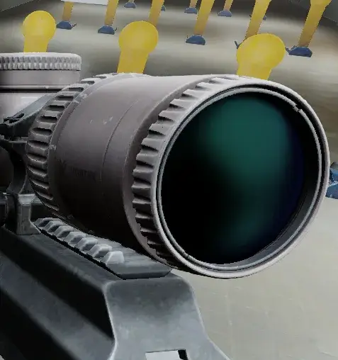
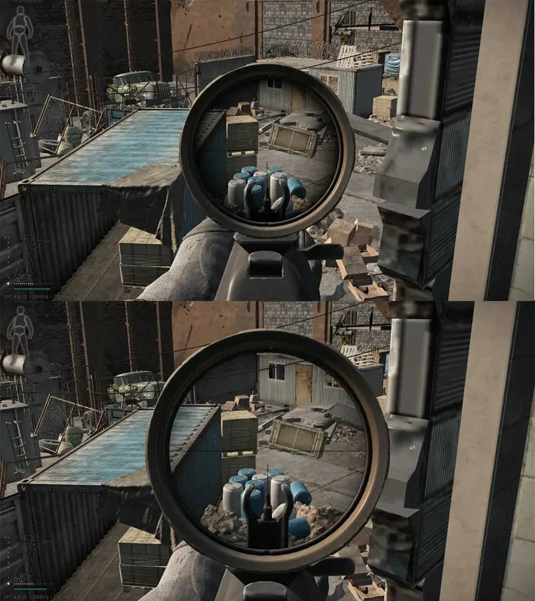
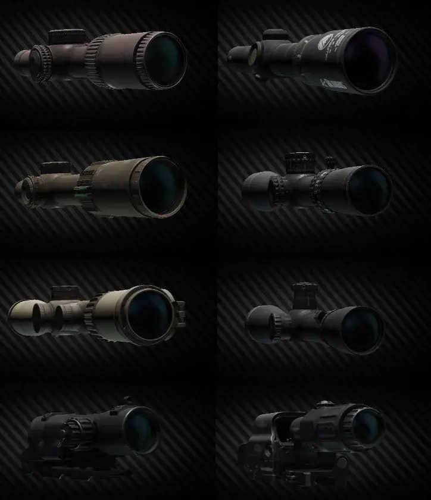

Mod
ScopeUpdateBackport
- Downloads
- 8,401
- Favourites
- 41
- Mod lists
- 75
ScopeUpdateBackport
- Apply the scopes of EFT Online to SPT，This mod will provide and apply the latest Scope data and appearance.
- If you use WTT-ContentBackport, you need copy the .bundle file in this Mod directory\bundles folder and replace this location (WTT-ContentBackport\bundles\assets\content\items\mods\scopes)
Install
- Download and extract
- Located at SPT/user/mods/
Requirement
- SPT 4.0.0~4.0.13
- Optional WTT-ContentBackport 1.0.4 and prerequisites
Preview
Before

After
ScopeEffect

Version
1.0.1
SPT ~4.0.0
Fika: unknown
8,401 downloads687.7 MB
First Upload
VirusTotal: report 1